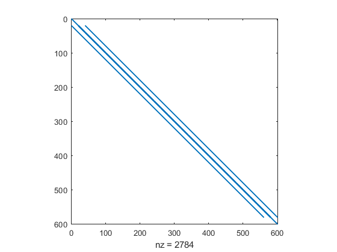
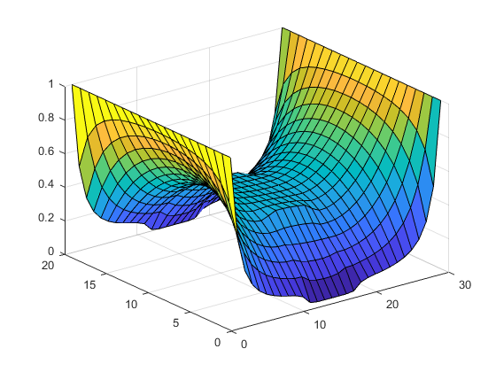
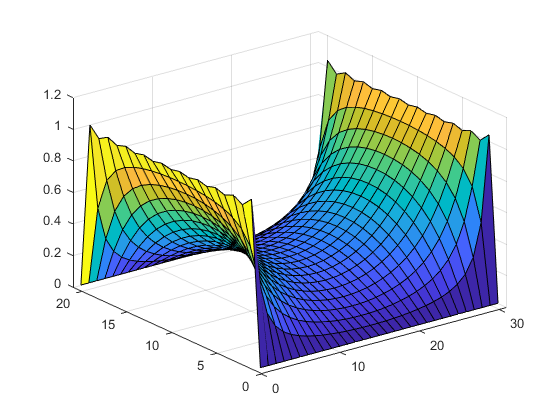
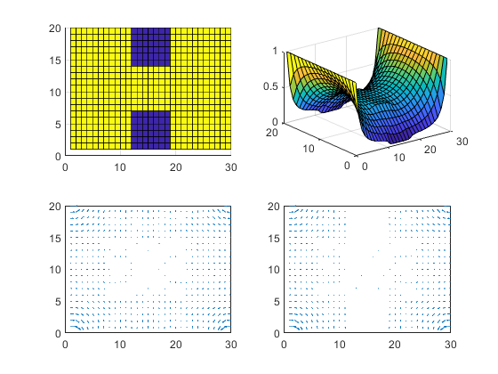

Contents
Beginning of Assignment 2
clear
close all
Part 2: Question B - Mesh Density
HigherMeshSize = 0;
if HigherMeshSize
nx = 60;
ny = 30;
else
nx = 30;
ny = 20;
end
Part 2: Question C - Narrowing of Bottle-Neck
BottleNeckType = 'DefaultBottleNeck';
switch(BottleNeckType)
case 'NarrowBottleNeck'
Lb = nx/10;
Wb = ny/10;
case 'WideBottleNeck'
Lb = nx/10;
Wb = ny/3;
case 'DefaultBottleNeck'
Lb = nx/10;
Wb = ny/5;
end
Part 2: Question D - Varying conduction of boxes
HigherResistivity = 0;
if HigherResistivity
sigma = 1e-8;
else
sigma = 1e-2;
end
Numerical Solution for Current Flow
x = linspace(0,1,nx*ny);
G = zeros(nx*ny , nx*ny);
B = zeros(1,nx*ny);
cMap = zeros(nx, ny);
Part1QuestionA = 0;
boundaryConditions = 1;
for i = 1:nx
for j = 1:ny
cMap(i, j) = 1;
if boundaryConditions
if i >= (nx/2 - Lb) && i <= (nx/2 + Lb) && (j >= (ny/2 + Wb) || j <= (ny/2 - Wb))
cMap(i, j)= sigma;
end
end
end
end
for i = 1:nx
for j = 1:ny
n = j + (i-1)*ny;
if i == 1
G(n, :) = 0;
G(n, n) = 1;
B(n) = 1;
elseif i == nx
G(n, :) = 0;
G(n, n) = 1;
if ~Part1QuestionA
B(n) = 1;
end
elseif j == 1
nxm = j + (i - 2) * ny;
nxp = j + (i) * ny;
nyp = j + 1 + (i - 1) * ny;
rxm = (cMap(i, j) + cMap(i - 1, j)) / 2.0;
rxp = (cMap(i, j) + cMap(i + 1, j)) / 2.0;
ryp = (cMap(i, j) + cMap(i, j + 1)) / 2.0;
G(n, n) = -4;
G(n, nxm) = rxm;
G(n, nxp) = rxp;
G(n, nyp) = ryp;
elseif j == ny
nxm = j + (i - 2) * ny;
nxp = j + (i) * ny;
nym = j - 1 + (i - 1) * ny;
rxm = (cMap(i, j) + cMap(i - 1, j)) / 2.0;
rxp = (cMap(i, j) + cMap(i + 1, j)) / 2.0;
rym = (cMap(i, j) + cMap(i, j - 1)) / 2.0;
G(n, n) = -4;
G(n, nxm) = rxm;
G(n, nxp) = rxp;
G(n, nym) = rym;
else
nxm = j+ (i-2)*ny;
nxp = j+ (i)*ny;
nym = j-1 + (i-1)*ny;
nyp = j+1 + (i-1)*ny;
rxm = (cMap(i,j) + cMap(i-1,j))/2.0;
rxp = (cMap(i,j) + cMap(i+1,j))/2.0;
rym = (cMap(i,j) + cMap(i,j-1))/2.0;
ryp = (cMap(i,j) + cMap(i,j+1))/2.0;
G(n,n) = -(rxm+rxp+rym+ryp);
G(n,nxm) = rxm;
G(n,nxp) = rxp;
G(n,nym) = rym;
G(n,nyp) = ryp;
end
end
end
figure;
spy(G)

Part 1: Numerical Voltage Plot
figure;
Vmap = zeros(nx,ny);
V = G\B';
for i = 1:nx
for j = 1:ny
n = j + (i - 1) * ny;
Vmap(i, j) = V(n);
end
end
surf(Vmap')

Part 1: Question B - Analytical Plot
figure;
L = nx;
W = ny;
VanalyticalNew = zeros(L+1,W+1);
VanalyticalSum = zeros(L+1,W+1);
for n = 1:2:100
for x = 1:(L+1)
for y = 1:(W+1)
p = x - L/2 - 1;
q = y -1;
VanalyticalNew(x,y) = 4/pi*(1/n)*(cosh((n*pi*p)/(W))/cosh((n*pi*(L)/2)/(W)))*sin((n*pi*q)/(W));
end
end
VanalyticalSum = (VanalyticalSum + VanalyticalNew);
surf(VanalyticalSum');
end

Part 2: Question A - Plots of Conductivity (cMap), Voltage (Vmap), Electric Field (Ex, Ey) and Current Density (Jx,Jy)
for i = 1:nx
for j = 1:ny
if i == 1
Ex(i, j) = (Vmap(i + 1, j) - Vmap(i, j));
elseif i == nx
Ex(i, j) = (Vmap(i, j) - Vmap(i - 1, j));
else
Ex(i, j) = (Vmap(i + 1, j) - Vmap(i - 1, j)) * 0.5;
end
if j == 1
Ey(i, j) = (Vmap(i, j + 1) - Vmap(i, j));
elseif j == ny
Ey(i, j) = (Vmap(i, j) - Vmap(i, j - 1));
else
Ey(i, j) = (Vmap(i, j + 1) - Vmap(i, j - 1)) * 0.5;
end
end
end
Ex = -Ex;
Ey = -Ey;
Jx = cMap .* Ex;
Jy = cMap .* Ey;
figure;
subplot(2, 2, 1), surf(cMap');
view(0, 90)
subplot(2, 2, 2), surf(Vmap');
subplot(2, 2, 3), quiver(Ex', Ey');
axis([0 nx 0 ny]);
subplot(2, 2, 4), quiver(Jx', Jy');
axis([0 nx 0 ny]);
